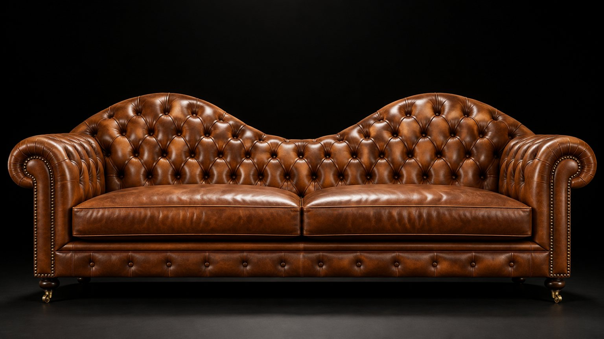

Hand-tufted in Yorkshire since 1891

The workshop
Every piece carries around 1,400 hand-tied springs and the initials of the person who built it.
Inside the workshopChoose your hide
Aniline leathers that age with you
Vegetable-tanned in small batches and finished by hand, so no two sofas wear in quite the same way.
- Cognac
- Oxblood
- Racing green
- Midnight
- Tobacco